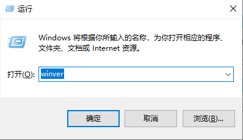
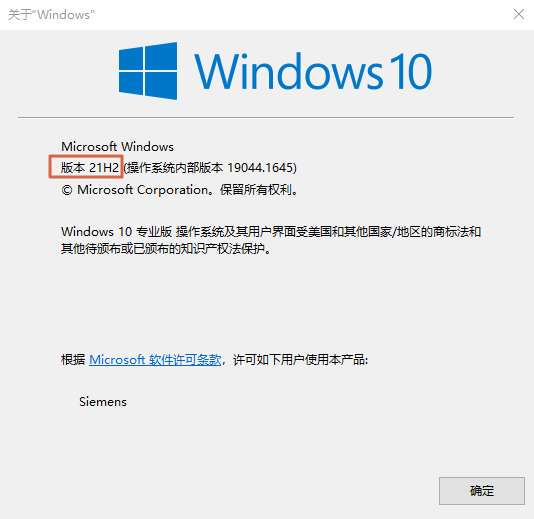
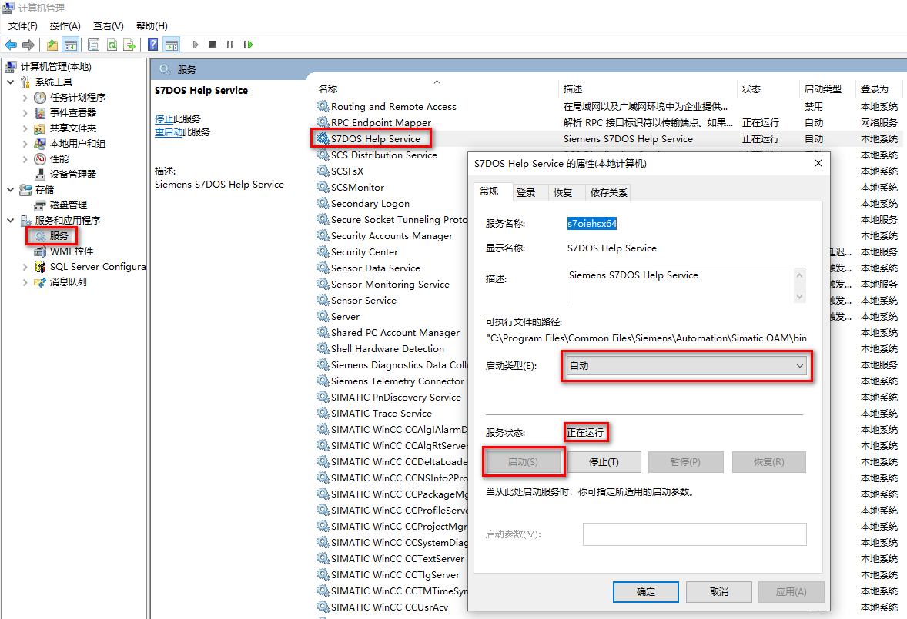
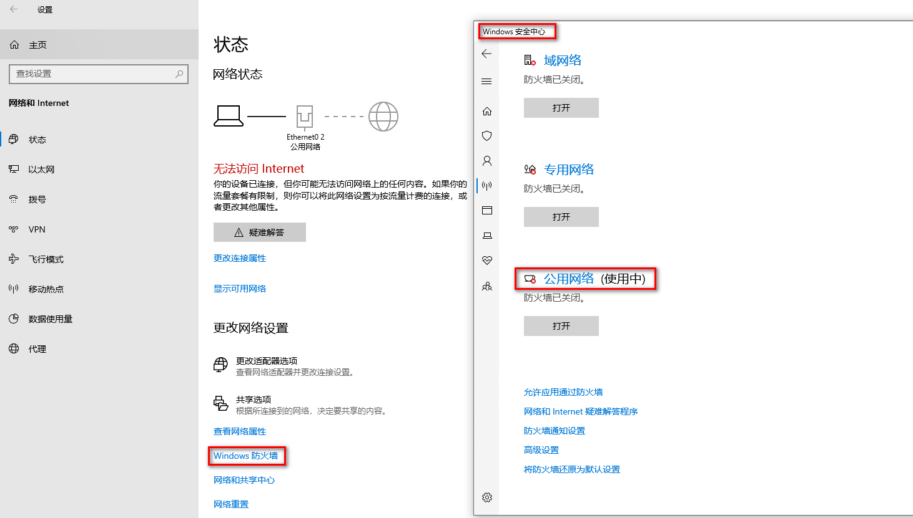

产生此问题的原因有很多，比如安装了360安全卫士、金山卫士以及 QQ 管家等第三方杀毒软件；或者 Windows 操作系统非完整版操作系统，例如安装了 GHOST 版本的操作系统，其他定制化的操作系统。
可按照如下步骤逐一检查：
西门子对每个主要软件都会进行官方的兼容性测试过，其中重要一项是和 Windows 操作系统的兼容性，需要根据软件版本和 Windows 版本核对，如果不匹配，可能会有问题。
每个版本软件安装条件参见链接。
有些时候需要安装 TIA Portal 更新包才满足兼容性，尽量安装，下载地址参见链接。
对于 Windows 10 这种有很多小版本的操作系统尤为需要注意，可以通过以下方法查看操作系统具体版本。
通过 Windows+R 快捷键，调出运行窗口，输入“winver”，如图 1 所示。

图 1 运行窗口
在弹出页面可以查看具体小版本，如图 2 所示红框。

图 2 版本
网络电缆是否连接好，在 CPU 本体打开底部端子块的盖子可以看到 PROFINET LED，Link （绿色）点亮指示连接成功。
如果使用了第三方交换机，需要交换机支持 DCP 协议（通过 DCP 发现 PROFINET 设备并提供基本设置），可以尝试不经过交换机连接 CPU 测试。
在计算机管理的服务中，找到 SIMATIC S7DOS HELP SERVICE 或者 S7DOS HELP SERVICE 等服务，需要确保该服务为自动状态并且已经启动，如图 3 所示。

图 3 检查服务
检查 360 安全卫士、金山卫士以及 QQ 管家等软件是否对操作系统的启动进程进行了优化设置，是否禁用了西门子软件所需的应用进程。
例如：如图 4 所示，PNIOMGR 进程不能被禁用，如果禁用将导致搜索不到 CPU。需要恢复启动该进程，并重启再次电脑测试。
图 4 进程
可以手动启动该进程。PNIOMGR 进程默认存放路径 C:\Program Files\Common Files\Siemens\Automation\Simatic OAM\bin。
关闭所使用的网络的防火墙，确认防火墙是否允许西门子软件通过防火墙，如图 5 所示。

图 5 防火墙
以上方法都无法奏效的情况下，可以考虑修复安装博途软件，更换操作系统或者电脑测试。